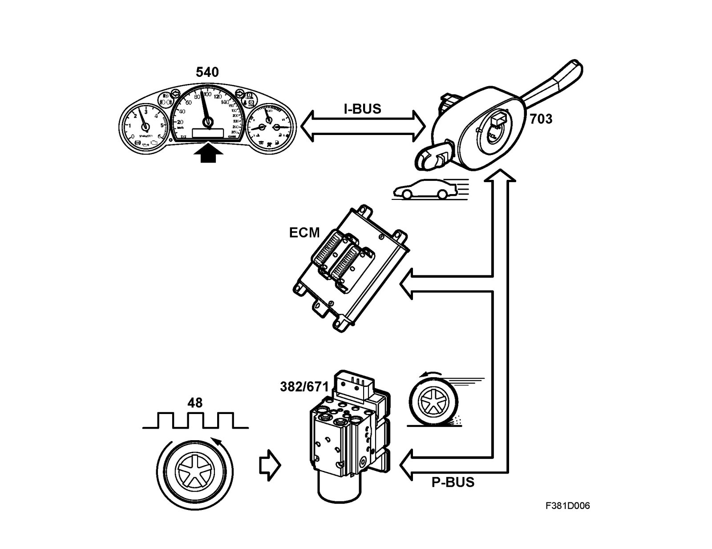
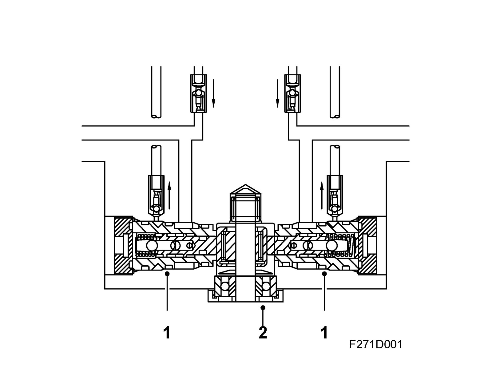
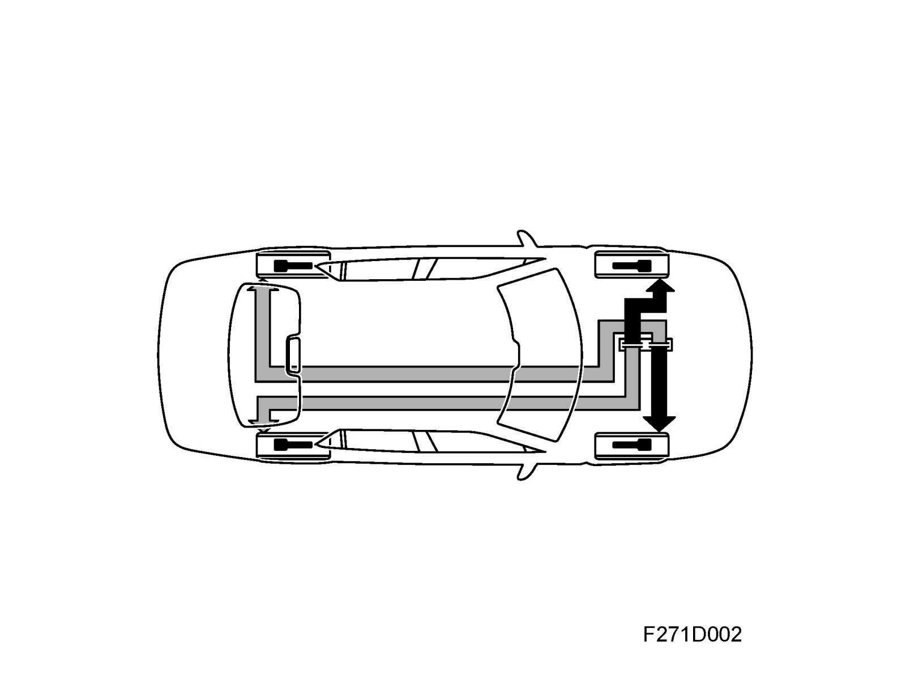
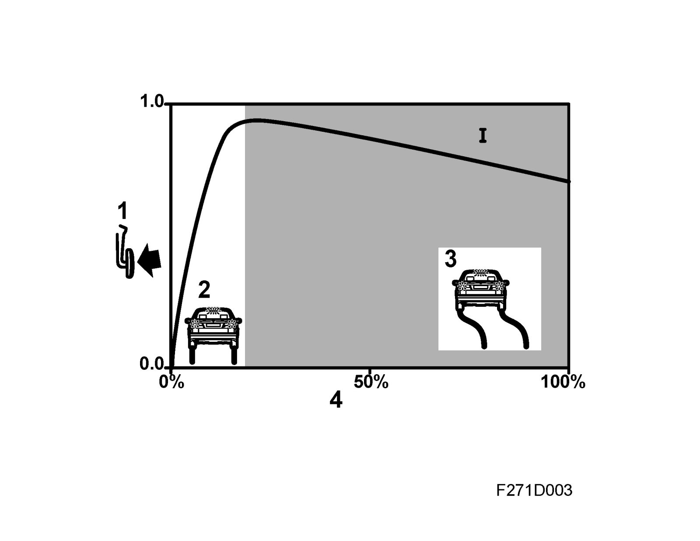
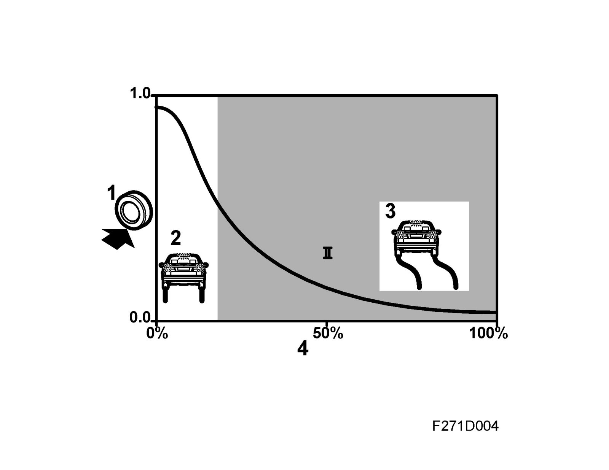
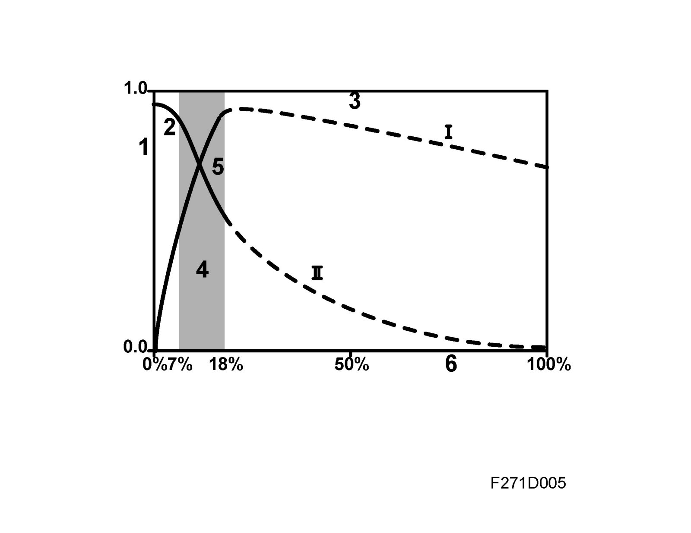
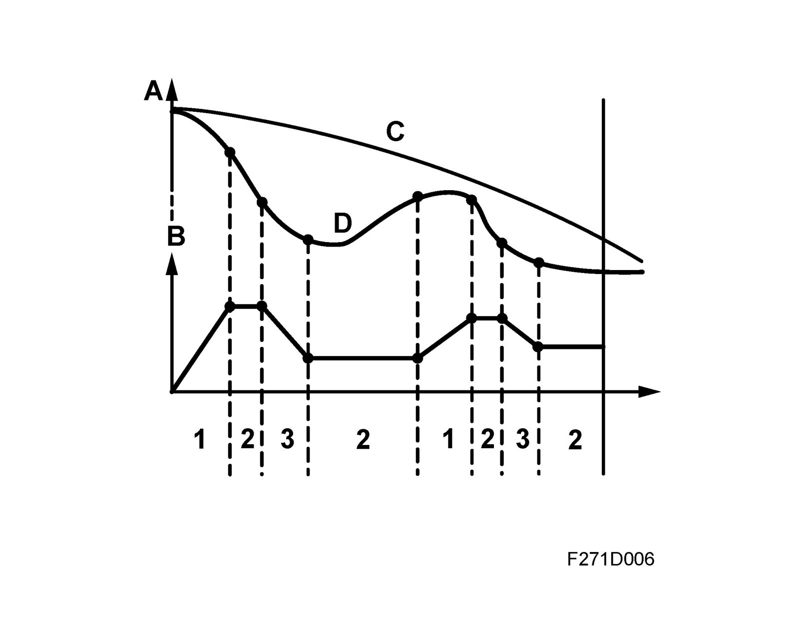
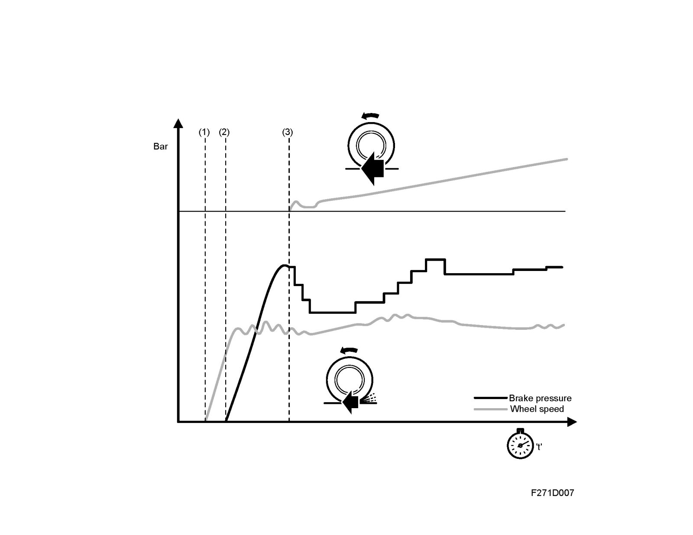
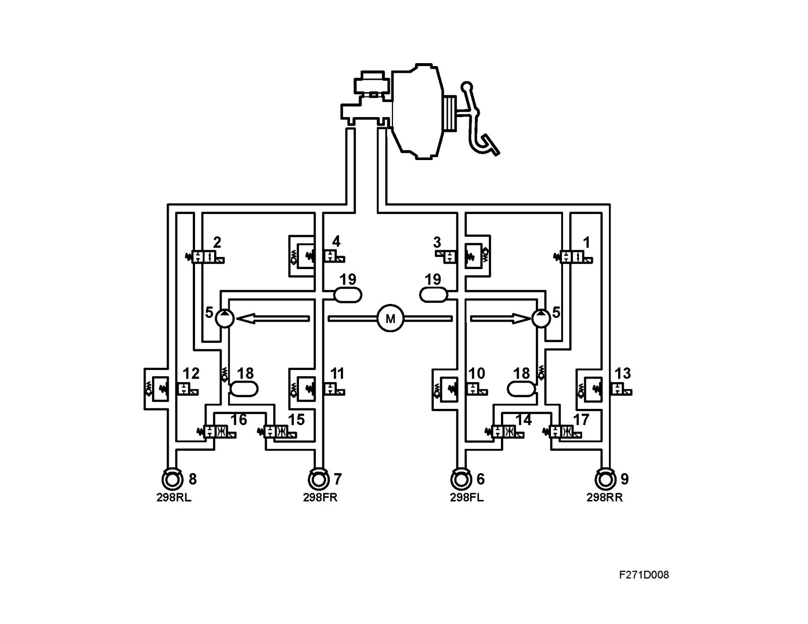

Part 1
TCS/ESP, detailed descriptionFunction

A wheel speed sensor at each wheel provides the control module with information regarding wheel speed.
The ABS function (Anti Block System) allows the solenoid valves (inlet/outlet valves) and the pump the regulate the hydraulic brake pressure when retardation of one wheel is greater than that of the other wheels. The hydraulic brake pressure can be kept constant or can be reduced in order for each wheel to employ maximum brake power for the road surface.
EBD (Electronic Brake-force Distribution) allows the control module to regulate brake force distribution between the front and rear wheels with help from solenoid valves (inlet/outlet valves).
The pump is not active during EBD modulation.
The TCS (Traction Control System) function in a TCS control module allows the control module to always make maximum use of friction for the driving wheels during acceleration. A limited wheel spin is regulated with a request to ECM for limitation of engine torque.
The TCS (Traction Control System) function in an ESP control module allows the control module to make maximum use of friction for the driving wheels during acceleration. A limited wheel spin can be regulated with brake application and a request to the ECM for engine torque limitation. The control module activates the pressure increase valve, pressure relief valve and the pump in order to create and regulate pressure to the drive wheel for which the brake is applied when wheel spin exceeds the accepted limit.
BTC (Brake Torque Compensation) is used on the B284 engine to provide a smoother and more comfortable engagement of ESP.
When the ignition key is turned to the ON position, the control module is activated, the ABS lamp and TCS OFF/ESP ON symbols in the MIU with a fixed glow during function check. The lamps extinguish after 3-5 seconds if no faults are found.
Wheel-speed signal output

Several other car systems require information regarding vehicle speed. The control module, which is connected to the P-bus, provides information regarding the speed of all wheels.
Wheel speed information is converted in the ECM to information regarding vehicle speed in km/h (mph). The engine control module for petrol engines uses the rear left wheel with the rear right as a reserve if there is a fault in the rear left wheel sensor. The engine control module for diesel engine uses the left front wheel with the right front wheel as a reserve.
Speed is adjusted depending on tire size and vehicle speed information is sent out on the P-bus.
The CIM unit converts vehicle speed to the I-bus and sends it to other control modules.
There is an output on pin 18 which can be used by other systems, which cannot process bus information, to access wheel speed information.
Speed information can be sent even if the ABS, Footbrake, TCS OFF or ESP OFF warning lamps are lit. The information is send as long as one of the rear wheel sensors is functional, the control module is operating and receives a power supply.
For more information regarding wheel speed on the bus, see Function description, bus communication.
Pump function

1 Pump housing
2 Pump motor eccentric shaft
The pump is integrated in the hydraulic unit and consists of two pump elements and a DC motor.
Each pump element is driven by a motor which has an eccentric wheel in one shaft end.
The pump has two control valves (inlet and outlet valves) and receives brake fluid from the accumulator chamber (LPA).
The hydraulic pump and electric motor are an integral part of the valve block and cannot be replaced separately.
Compression stroke
The pump is filled via the inlet duct, the motor starts and the pistons start brake fluid evacuation.
When the pressure build-up has reached the level required to close the pump inlet valve, the pump continues to build pressure until the outlet valve opens.
Return stroke
The pistons retract with their return springs. When the pressure is reduced at the pump outlet valve, the valve closes due to the reduced volume and the pressure difference over the ball in the pump outlet valve.
When the pump outlet valve is closed, the pump is filled with more brake fluid from the accumulator chamber.
ABS mode
The pump unit, which is only activated when an outlet valve is open, returns surplus brake fluid to the master cylinder.
The pressure in the returned brake fluid is determined by the brake pressure in the master cylinder, which is in turn proportional to the pedal pressure applied.
TCS and ESP mode in the ESP control module
The pump is continuously active during ESP and TSP modulation with braking.
Pressure is built up by closing the pressure relief valve and opening the pressure increase valve to supply the pump with brake fluid. The control module closes the pressure increase valve when a pre-set pressure is reached.
The pressure is then modulated as the control module opens the pressure increase valve to boost the pressure, keeps the pressure increase and pressure relief valves closed (to maintain pressure) and opens the pressure relief valve to reduce the pressure. The excess brake fluid resulting from opening the pressure relief valve is returned to the master cylinder.
EBD (Electronic Brake-force Distribution)

EBD, which is integrated with the control module, is a function which can be compared to a load sensing valve for the rear wheel brakes. For optimum braking and steering stability, the maximum braking force must be applied to both the front and rear wheels for all conditions/loads. The control module prevents the rear wheels from receiving excessive braking force by regulating brake pressure.
EBD modulation occurs sooner than the normal ABS mode and provides the occupants of the car with a more comfortable ride. The pump is not used during EBD modulation.
During braking, it is important for proper steering stability that the rear wheels do not lock first. In order to achieve this under different load conditions (e.g. a heavily loaded car requiring greater braking force in order to lock the wheels), the control module uses wheel speed to modulate the braking force on the rear wheels with help from the inlet solenoid valves. This prevents excessive permissible slip between the front and rear wheels.
When the criteria are met, the rear wheel inlet valves close and the EBD function is activated in order to regulate slip between front/rear wheels and provide stability. If any of the wheels locks during EBD modulation, the control module switches to normal ABS modulation.
CBC (Cornering Brake Control) in the ESP control module
CBC is a function that is used when the brakes show a tendency to lock. The function operates in combination with EBD and ABS in order to stabilize vehicle lateral and yaw rate movements in situations when the driver corners while braking. Modulation takes place by braking the four wheels individually.
CBC determines if the vehicle is cornering and approaching oversteer by comparing the four wheel speeds. If the vehicle shows a tendency towards oversteer at the same time as the driver depresses the brake pedal, CBC will begin adjustment.
The function is included in TCS and ESP and is activated before ABS modulation. This means that the function only operates with the brake pressure applied by the driver and regulates brake pressure with help from the inlet and outlet valves. The system limits rear braking force and primarily adjusts the front wheel brakes in order to achieve stability.
CBC includes functions which prevent activation on roads with uneven surfaces.
CBC requires information regarding
- wheel speed from all four wheels
- driver braking
CBC uses
- The four inlet and outlet valves to regulate with varying brake pressure on one or more wheels.
CBC is activated in extreme situations only and prevents the car from oversteering.
ABS function
The ABS system provides optimum braking without any loss of directional stability.
Braking force/Tire slip
The diagram shows braking force as a function of tire slip.

1 Braking force
2 Stable position
3 Unstable position
4 Tire slip
The braking force is equivalent to the coefficient of adhesion or the friction between the tire and the road surface. Each application of braking force gives rise to a certain degree of slip. The slip of a freely rotating wheel is expressed as 0% and of a locked wheel as 100%.
When the brake is first applied at 0% slip, braking force increases sharply but the degree of slip increases only gradually up to a certain limit. Beyond that point, braking force decreases with increasing slip.
Lateral force/Tire slip
The diagram shows lateral force as a function of tire slip.

1 Lateral force
2 Stable position
3 Unstable position
4 Tire slip
The maximum braking force is reached at a point known as the limit of optimum slip. The section of the curve between 0% slip and the limit of optimum slip is called the stable braking zone, and the section of curve between the limit of optimum slip and 100% slip is called the unstable braking zone, as stable braking cannot be achieved within this zone. This is because the wheel quickly becomes locked after the limit of optimum slip has been reached, unless the braking force is immediately reduced.
Slip also occurs when the tire is called upon to transmit a lateral force, e.g. during cornering. Diagram 2 shows how the lateral force falls away sharply with increasing slip. At 100% slip, i.e. when the wheels have locked up, no lateral force remains for steering and the driver will no longer be able to control the vehicle.
The diagram shows both curves with ABS modulation range above.

1. Braking/lateral force
2. Stable position
3. Unstable position
4. ABS operating range
5. Limit of optimum slip
6. Tire slip
During braking, the braking force is allowed to increase to a point near the limit of optimum slip when ABS prevents further braking force. Hydraulic pressure is then adjusted so that the braking force is kept as close to the optimum level (limit of optimum slip) as possible, irrespective of how hard the driver depresses the brake pedal.
Thus, because the ABS system prevents the degree of slip from exceeding the limit of optimum slip, the car never enters the unstable braking zone. At the same time, some lateral force is preserved to ensure that steering control can be maintained (curve II).
ABS modulation
The diagram shows ABS modulation

A Speed
B Braking force
C Road speed
D Wheel rotation speed
1 Modulation phase 1; inlet valve open, outlet valve closed
2 Modulation phase 2; Inlet valve closed, outlet valve open
3 Modulation phase 3; Outlet valve closed, pump activated
When the control unit detects excessive retardation (speed decrease) for one of the wheels, it modulates the brake pressure to the wheel in three phases:
- PHASE 1 Pressure increase
- PHASE 2 Pressure holding
- PHASE 3 Pressure decrease
PHASE 1 Pressure increase
Inlet valve is open, outlet valve is closed and the pressure is allowed to build.
Wheel rotation speed is reduced.
PHASE 2 Pressure holding
Inlet valve closes, outlet valve is closed. This prevents an increase in brake pressure to the caliper and provides a flow of brake fluid upstream of the inlet valve for use in phase 1.
Wheel rotation speed is allowed to increase.
PHASE 3 Pressure decrease
The outlet valve opens and at the same time opens the passage from the caliper to the hydraulic accumulator which quickly receives the pressure from the caliper. At the instant the outlet valve opens, the control module starts the pump, which pumps the fluid back to the master cylinder. The wheel rotation speed will now increase.
When the outlet valve closes, the pump stops running and the inlet valve opens. This results in a reduction of wheel rotation speed.
PHASES 1-3
These phases are repeated until either the brake is released or sufficient adhesion (friction) returns between the tire and the road surface. In the event of a circuit break or a short circuit, the valves will return to their rest position and conventional braking without ABS modulation is obtained
TCS function with TCS control module
The TCS function in the control module employs reduction of engine torque (request to engine control module) on the driving wheels in order to utilize the friction of the road surface in all driving conditions.
To understand the TCS function it is best to assume that the road surface is slippery, with varying degrees of friction under the two drive wheels.
The rotational speed of the rear wheels is used as a reference for comparing the speed of the drive wheels individually. Wheelspin is described as the result of when either of the drive wheels rotates at a higher speed than the rear wheels. The magnitude of this wheelspin and the speed of the car are decisive with regards to system functionality.
The use of engine torque regulation allows a smooth and comfortable modulation of the spinning wheels.
A certain degree of wheelspin is always allowed so that the sporty feel and handling of the car will still be retained. This varies with the speed of the car, the friction between the tires and the road surface and how "aggressively" the car is being driven (position of the accelerator pedal).
If the driver brakes while TCS regulation is in progress, the control module will continue TCS regulation with engine torque limitation.
TCS regulation
When starting on a slippery surface, the following will happen:
The drive wheel with the lowest friction will start to spin first. When wheel spin is detected through the wheel sensors, a request is sent via the bus to the engine control module (ECM) for engine torque limitation to modulate the wheel spin.
This procedure will achieve the best traction and steering force and provide accessibility that compares with the use of a differential brake. A limitation of engine torque also means that no extra traction will be transferred to the outer wheel when cornering so it will have a reserve remaining for absorbing steering forces. The driver will not be surprised by the front end suddenly loosing grip.
A relatively high degree of wheelspin is accepted when starting in order to retain the feeling of sportiness and also enable the wheels to dig themselves down to a firmer surface whenever conditions make this necessary.
TCS function with ESP control module

The TCS function in the control module employs both reduction of engine torque (request to engine control module) brake application on the driving wheels in order to utilize the friction of the road surface in all driving conditions.
To understand the TCS function it is best to assume that the road surface is slippery, with varying degrees of friction under the two drive wheels.
The rotational speed of the rear wheels is used as a reference for comparing the speed of the drive wheels individually. Wheelspin is described as the result of when either of the drive wheels rotates at a higher speed than the rear wheels. The magnitude of this wheelspin and the speed of the car are decisive with regards to system functionality.
At low speeds, traction is given priority and the system operates primarily by braking. The purpose of this is to provide a certain amount of braking torque to the drive wheel having the lowest friction (the wheel that spins first).
This allows more power to be transferred to the other drive wheel, which then has maximum traction. Through this distribution of the power applied to the wheels, the available friction can be utilized to maximum effect.
Wheel brakes provide a quick and forceful way to retard spinning wheels while engine torque limitation is the gentler, more comfortable way. These processes often operate simultaneously and certain driving cases demand braking, for example starting on an incline with different friction on both drive wheels. Braking is applied to the wheel with the least friction to such a degree that the traction is transferred to the other drive wheel, which achieves better traction due to the differential brake.
A certain degree of wheelspin is always allowed so that the sporty feel and handling of the car will still be retained. This varies with the speed of the car, the friction between the tires and the road surface and how "aggressively" the car is being driven (position of the accelerator pedal).
If the driver brakes during TCS modulation, the TCS function with brake application will be switched off and braking function will be selected. The control module will continue TCS modulation using engine torque limitation.
Low speed
When starting on a slippery surface, the following will happen:
The drive wheel having the lowest friction begins to spin first. When wheelspin is detected by the control module through the wheel sensors, TCS modulation starts by applying the brakes.
When the wheel is braked, additional tractive power is transferred to the other wheel which still has a grip on the road. If the road surface does not have much friction, the other wheel may begin to spin. When wheelspin occurs, the control module will send an engine torque limitation request to the ECM which then prevents further wheelspin.
The optimum combination of tractive power and steering ability is thus achieved as well as the same traction as with the use of a differential brake.
A relatively high degree of wheelspin is accepted when starting in order to retain the feeling of sportiness and also enable the wheels to dig themselves down to a firmer surface whenever conditions make this necessary.
High speed
At speeds higher than 40 km/h (25 mph), the TCS function changes its mode of operation and starts modulation with engine torque limitation of the wheel that first starts to spin, i.e. the wheel with the lowest friction.
Modulation with brake application is used to brake the spinning wheel when engine torque limitation is inadequate.
Braking is used at speeds up to 40 km/h (25 mph).
Primary limitation of engine torque means that no extra tractive force is transferred to the outer wheel when cornering. The outer wheel then has a sufficient margin of grip to take up steering forces to the full. The driver avoids being taken by surprise as the front wheels suddenly lose traction.
TCS regulation with ESP system
Since TCS modulation braking occurs without depression of the brake pedal, the hydraulic unit must build up and modulate the pressure to the driven wheel which is to be braked if it develops wheelspin in excess of the permitted limit.

1 Pressure Increase Valve Front Left
2 Pressure Increase Valve Front Right
3 Pressure Relief Valve Left Front
4 Pressure Relief Valve Front Right
5 Pump
6 Wheel sensor, front left
7 Wheel sensor, front right
8 Wheel sensor, rear left
9 Wheel sensor, rear right
10 Inlet valve, front left (ABS)
11 Inlet valve, front right (ABS)
12 Inlet valve, rear left (ABS)
13 Inlet valve, rear right (ABS)
14 Outlet valve, front left (ABS)
15 Outlet valve, front right (ABS)
16 Outlet valve, rear left (ABS)
17 Outlet valve, rear right (ABS)
18 Accumulator chamber
19 Pressure chamber